95% не доходили
до подписки.
Редизайн, удвоивший
аудиторию до 1,7 млн
Триколор Кино и ТВ — онлайн-кинотеатр с ТВ-вещанием для базы 12 млн абонентов крупнейшего спутникового оператора России. Пришла единственным дизайнером на ТВ-платформы для редизайна Smart TV и Apple TV. Два приложения теряли 95% пользователей до первой подписки и выглядели как разные продукты.
год к году
в стриминг
и Google Play

Интерфейс убивал конверсию. Не цена, не контент.
GS Labs разрабатывает решения для цифрового ТВ. Стратегическая цель Триколора в тот период — перевести спутниковую базу в OTT, растить подписки и удерживать аудиторию на фоне конкуренции с IVI, Wink и Okko.
Специализированное юзабилити-агентство провело два независимых исследования и передало их нам. Я синтезировала результаты и нашла точку входа: воронка теряла 95% установивших приложение до первой подписки.
60% пользователей при первом знакомстве с телегидом решали, что весь контент платный, и уходили ещё до регистрации. Хотя треть каталога была бесплатной.
Второй барьер: не понимали, зачем регистрироваться, — воспринимали приложение как продукт только для клиентов с приставкой.
Проблему создавал не контент и не цена. Её создавал интерфейс.
«Наверное, надо что-то оплатить, чтобы использовать это приложение.»
Из юзабилити-исследования, цитата респондента
Параллельно была третья проблема. Smart TV и Apple TV обновлялись независимыми командами с разной скоростью, без общей системы. Маркетинг анонсировал фичу — одна платформа получала, другая нет. Пользователь с двумя устройствами получал два разных опыта в одном продукте.
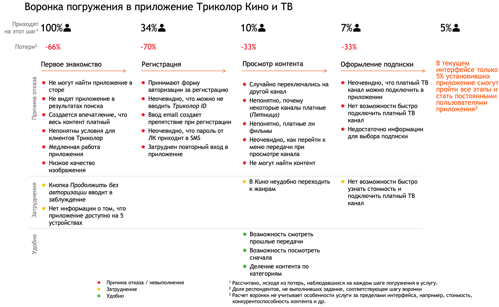
Воронка погружения: 100% установок → 5% оплаченных подписок
Ключевые решения из десятков принятых за проект
1. Доступ
Три состояния контента вместо одного знака рубля
Контекст. Знак рубля в телегиде стоял на всех каналах одинаково: платных и бесплатных. Пользователи уходили до регистрации, не зная, что она что-то даёт.
Решение. Рассматривала альтернативы: хард-пейвол при клике на платный контент или отдельный экран с тарифами на входе. Оба прерывали изучение каталога. Предложила и спроектировала систему трёх состояний: без знака (доступ без регистрации), замок (бесплатно после регистрации), рубль (подписка либо оплата). Команда открыла часть контента без регистрации, я спроектировала UX этого сценария. В разделе кино бейджи уже были — система расширила логику на телегид.
Результат. Убрала два барьера на верхней точке воронки: ложный сигнал «всё платно» и непонимание ценности регистрации. По фидбэку после редизайна страх случайного списания перестал упоминаться. Это повлияло на рост аудитории до 1,7 млн.
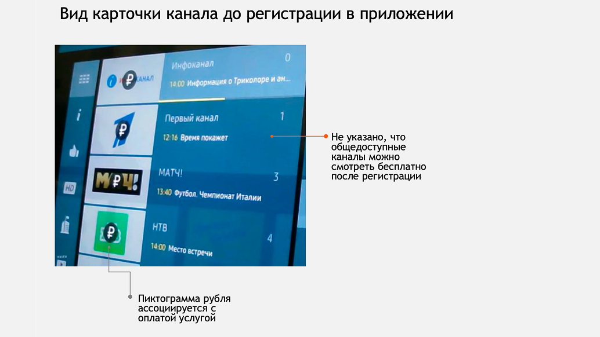
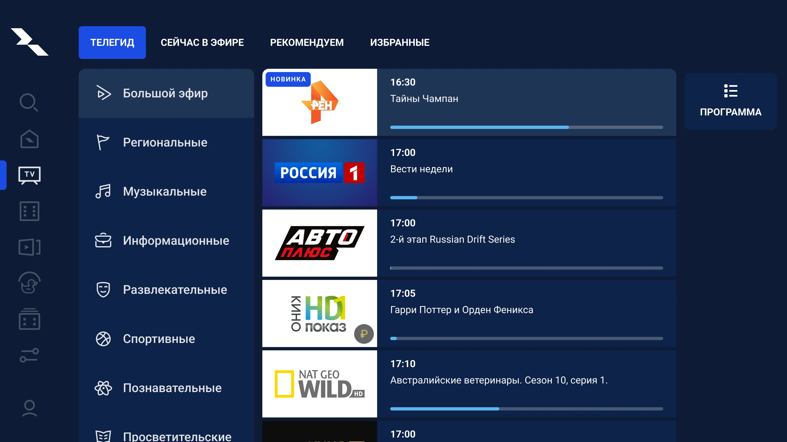
Телегид: один знак рубля → три состояния контента
2. Регистрация и вход
Единый флоу входа вместо трёх запутанных вариантов
Контекст. Регистрация — самая критичная точка воронки, −70% потерь. Форма входа предлагала три варианта: номер телефона, Триколор ID, логин. Пользователи не понимали, что выбрать. Те, кто выбирал телефон, ждали SMS, но было неочевидно, что пароль придёт именно оттуда — многие придумывали свой и потом не могли войти. Триколор ID (длинный номер с договора или приставки): не знали, что это и где искать, а набирать цифрами на пульте физически тяжело. Обязательный e-mail при регистрации добавлял ещё одно сложное поле.
Решение. Спроектировала единый флоу: один стартовый экран — телефон или Триколор ID. Триколор ID вынесла на отдельный шаг с явным объяснением, что поле необязательное. Код из SMS теперь явно подписан — нет путаницы, что вводить. Добавила второй способ входа: код из мобильного приложения Триколора. Для лояльной аудитории, у которой уже есть приложение, это самый быстрый путь без набора на пульте.
Результат. Закрыла три барьера регистрации одновременно: непонимание обязательности Триколор ID, путаницу с паролем из SMS, перегруженность выбором на старте. −70% потерь на регистрации было самой большой отдельной утечкой в продукте; работа над её сокращением напрямую вела к удвоению аудитории.
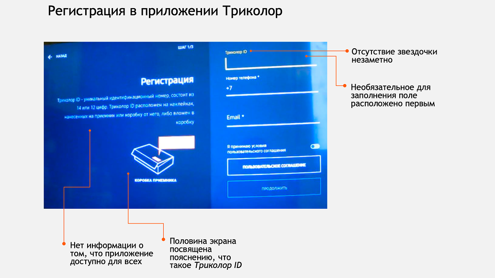
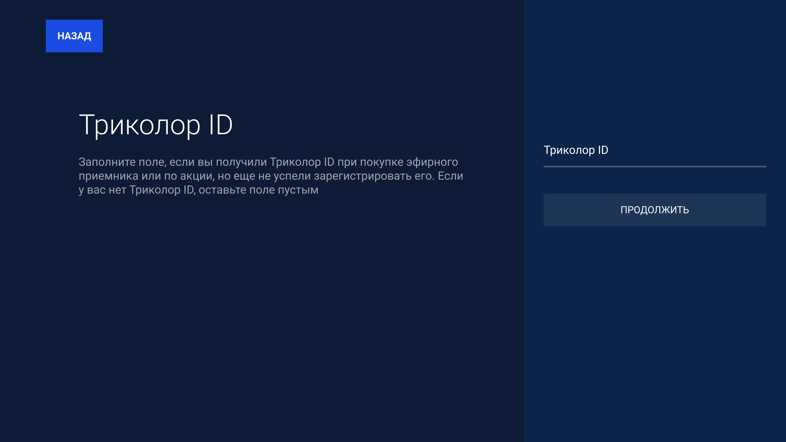
Регистрация: перегруженная форма → пошаговый флоу
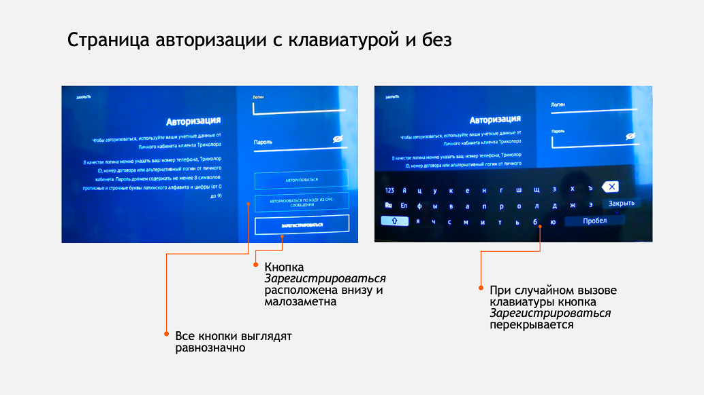
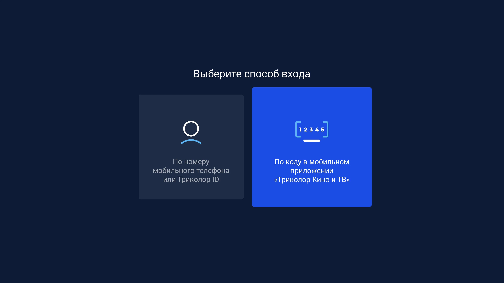
Авторизация: три варианта входа → упрощённый экран
3. Навигация
Боковое меню вместо горизонтального
Контекст. Горизонтальное меню конфликтовало с вертикальным подменю телегида: пользователь одновременно ориентировался в двух плоскостях на пульте. Плюс горизонталь физически ограничивала количество пунктов: новые разделы некуда было добавить без потери читаемости.
Решение. Вертикальное боковое меню снимает оба ограничения сразу: плоскость одна, пунктов помещается больше. Конкурентный анализ подтвердил паттерн — крупные ТВ-приложения работают так же. Спроектировала замену для Smart TV и Apple TV параллельно, с учётом особенностей каждой платформы: свайп на Apple TV, направления пульта на Smart TV. Решение внедрено в живом продукте.
Результат. Убрала конфликт двух плоскостей. Структура стала прозрачнее, движение по разделам короче.
Гипотеза проверена конкурентным анализом, но не тестированием на нашей аудитории. Осознанно приняли этот риск — данные конкурентов давали достаточно оснований.
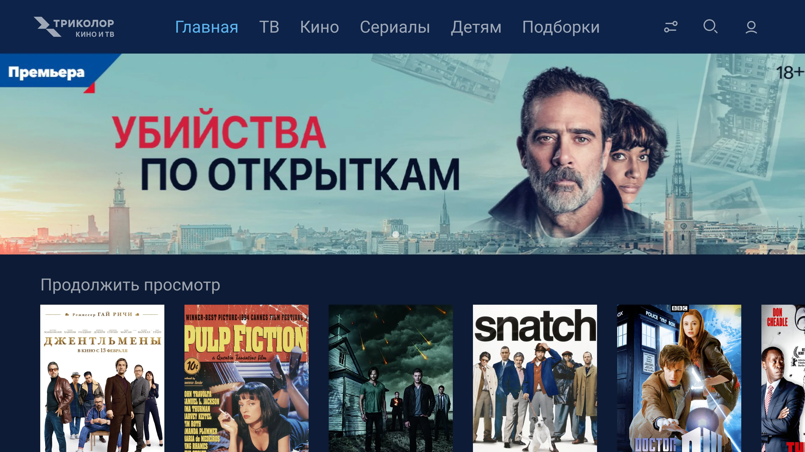
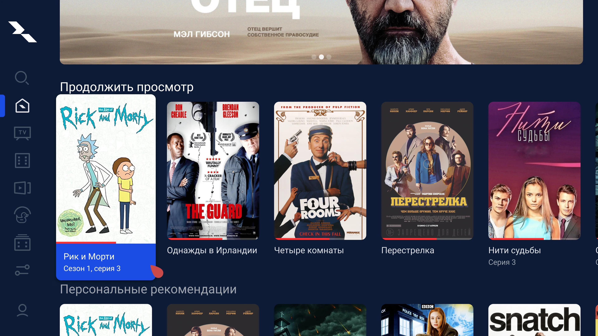
Горизонтальное меню → боковое меню
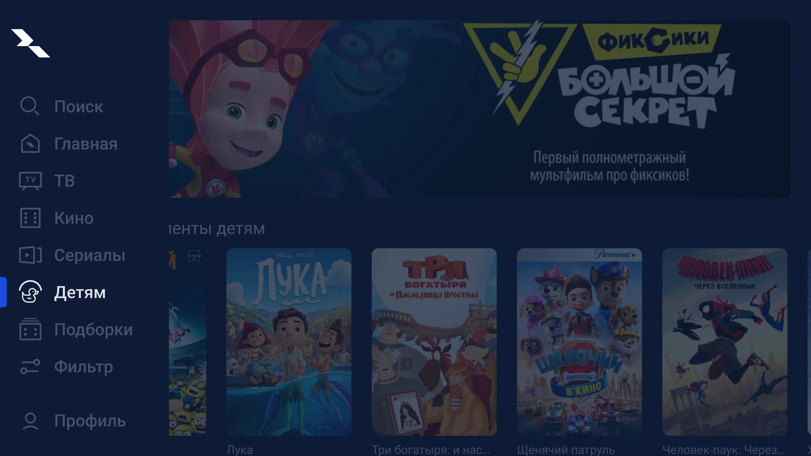
После: боковое меню в раскрытом виде
4. Платформы
Единые принципы вместо независимых платформ
Контекст. Дело было не в том, что платформы выглядели по-разному. А в том, почему это происходило. Smart TV и Apple TV обновлялись независимыми командами без общей системы. Одна уходила вперёд, другая отставала. Маркетинг анонсировал фичу — абоненты одной платформы её получали, абоненты другой открывали приложение и не находили.
Решение. Вариантов было три: взять за основу Smart TV, взять Apple TV или выработать единые UX-принципы и реализовать их на каждой платформе с учётом её особенностей. Первые два означали, что одна платформа будет системно вторичной. Выбрала третье: определила общие принципы, структуру экранов, логику карточек, навигационные паттерны и параллельно отрисовала макеты под каждую платформу.
Результат. Платформы перестали жить по отдельным правилам. Продукт начал соответствовать тому, что обещает маркетинг, на обеих платформах одновременно.
Синхронная работа над двумя платформами замедляла скорость итераций. Изменение нельзя было выкатить на одной и вернуться ко второй позже. Осознанно выбрала скорость системы в ущерб скорости отдельного спринта — только так можно было убрать ситуацию, когда продукт не соответствует тому, что обещает реклама.
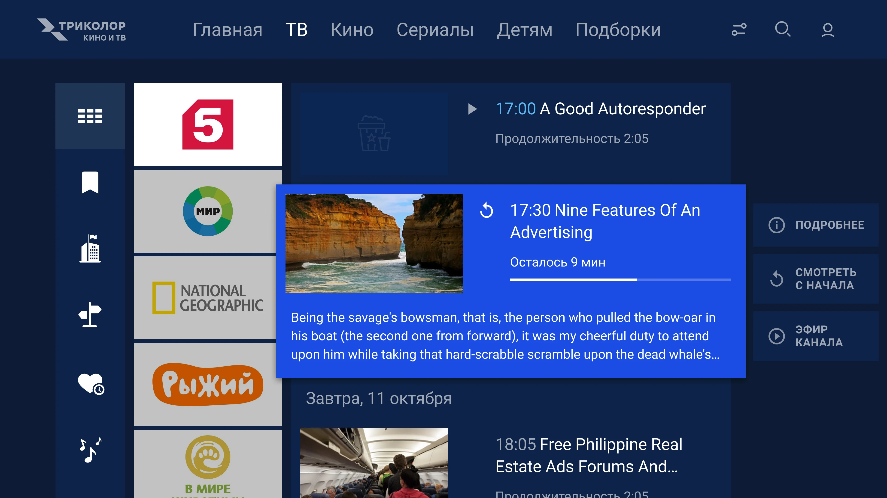
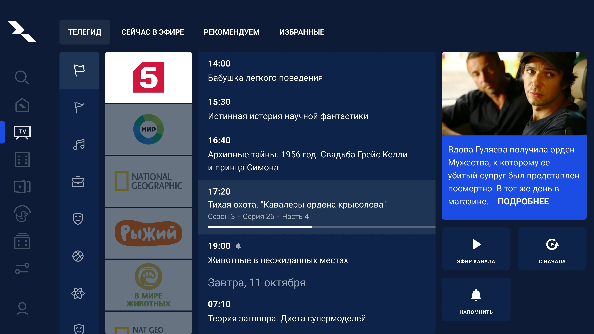
Smart TV: до и после редизайна
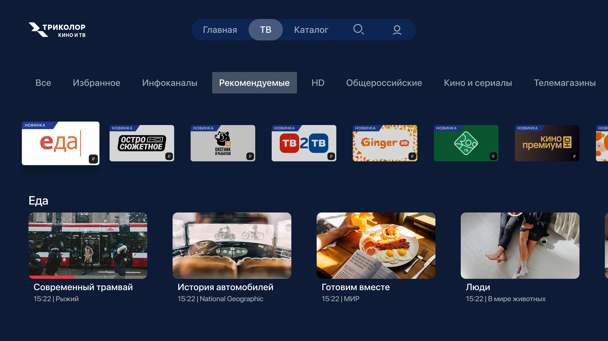
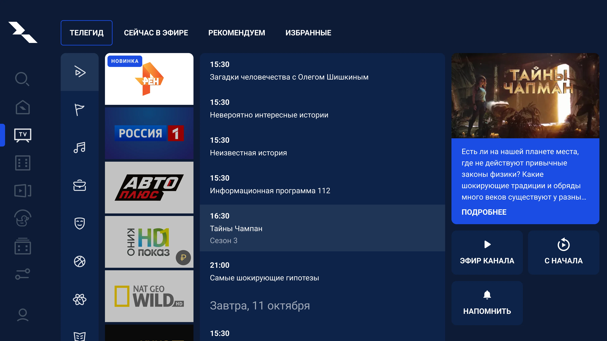
Apple TV: до и после редизайна
Как Product Designer на проекте
- Единственный дизайнер на ТВ-платформы. Отвечала за весь дизайн Smart TV и Apple TV.
- Работала параллельно с двумя независимыми командами разработки. Согласовывала решения с обоими PM и обеими командами.
- Синтезировала результаты двух UX-исследований от внешнего агентства, превращала их в продуктовые решения и защищала перед стейкхолдерами Триколора.
- Работала с контентными партнёрами: понимала их коммерческие интересы и встраивала в продуктовые ограничения.
Аудитория удвоилась за год
Четыре решения закрыли четыре точки потери: доступ убрал ложный сигнал платности, авторизация упростила вход на самой просевшей точке, навигация сняла конфликт плоскостей, унификация устранила рассинхронизацию платформ.
5% доходили до подписки
−70% потерь на этапе регистрации
60% считали весь контент платным
66/100 SUS — нижняя граница нормы
рост аудитории до 1,7 млн (×2 YoY)
регистрация перестала быть точкой обвала
страх случайного списания исчез из фидбэка
рейтинг 4.2–4.5 в App Store и Google Play
14% абонентов в стриминг (×2 к году ранее)
Что я бы сделала иначе
Исследования чётко показывали: порядок лент на главном экране не соответствовал реальным сценариям просмотра. Я настаивала на изменениях, опираясь на данные. Триколор отказывал раз за разом. И только в процессе работы стало понятно почему: за каждой лентой стоял контентный партнёр с коммерческими обязательствами. Для Триколора порядок лент был не UX-решением, а инструментом продаж.
Сейчас бы начала с вопроса: какие решения в этом продукте вообще не про UX? Это позволило бы либо найти решение внутри коммерческих ограничений, либо честно зафиксировать, что это вне зоны дизайна. И не тратить время на согласование того, что было закрыто с самого начала.
Смотреть продукт: LG Store | Google Play | Apple TV